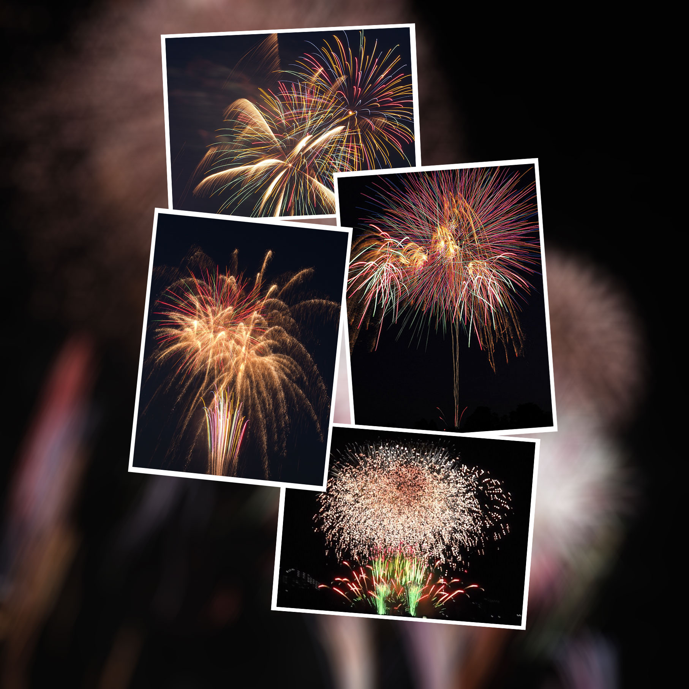

AIR A01 をリモート操作
ライブビューを確認しながら、iPhone / iPad から Olympus AIR A01 の撮影を操作できます。
AirHanabi は、Olympus AIR A01 とローカル Wi-Fi で接続し、花火撮影向けの操作をかんたんに行うためのアプリです。
ライブビューを確認しながら、iPhone / iPad から Olympus AIR A01 の撮影を操作できます。
単発花火とスターマインの撮影スタイルに対応しています。
撮影した写真や、スターマインから作成した比較明合成写真・タイムラプス動画を保存できます。
花火の開始時にシャッターボタンをタップします。スローシャッターで、花火の軌跡を描いた写真を撮影できます。

開始時と終了時にシャッターボタンをタップします。連続撮影した写真から、複数の花火が写った比較明合成写真を作成できます。
スターマイン撮影後、連続撮影した写真からタイムラプス動画を生成できます。
iPhone / iPad の Wi-Fi が AIR A01 に接続されているか確認してください。初回起動時や iOS の設定変更後は、ローカルネットワークへのアクセス許可も必要です。
フォトライブラリへのアクセスを許可している場合、撮影した写真や作成した動画は iOS の写真アプリに保存されます。
撮影した写真に位置情報タグを追加するために使用します。AirHanabi 独自のサーバーへ位置情報を送信したり保存したりしません。
次回起動時にタイムラプス動画作成用のデータが残っている場合、動画を作成するか破棄するかを選択できます。
いいえ。AirHanabi は Olympus または OM Digital Solutions の公式アプリではありません。
AirHanabi は、アカウント登録、ログイン、広告 SDK、解析 SDK を使用していません。
不具合報告やサポート依頼の際は、利用端末、iOS バージョン、Olympus AIR A01 の状態、発生した操作、表示されたメッセージを添えてご連絡ください。
問い合わせフォーム からお問い合わせください。
AirHanabi は Olympus または OM Digital Solutions の公式アプリではありません。カメラ本体、レンズ、アクセサリに関する問い合わせは、各製品の公式サポート情報を確認してください。
AirHanabi connects to Olympus AIR A01 over local Wi-Fi and provides simple controls designed for fireworks photography.
Control Olympus AIR A01 from your iPhone or iPad while checking the live view.
Use modes for single-shot fireworks and rapid continuous-shot fireworks.
Save captured photos, lighten-composite starmine photos, and time-lapse movies.
Tap the shutter button when the fireworks start. The slow shutter captures graceful fireworks trails.
Tap the shutter button at the start and again at the end. AirHanabi creates a lighten-composite photo from the continuously captured images.
After starmine shooting, AirHanabi can generate a time-lapse movie from the captured photos.
Check that your iPhone or iPad is connected to the AIR A01 Wi-Fi network. Local Network permission is also required after first launch or after changing iOS settings.
If Photo Library access is allowed, captured photos and generated movies are saved to the iOS Photos app.
Location is used only to add location tags to captured photos. AirHanabi does not send or store location information on its own server.
If data for creating a time-lapse movie remains, you can choose to create the movie or discard the data the next time the app starts.
No. AirHanabi is not an official app from Olympus or OM Digital Solutions.
AirHanabi does not use account registration, login, advertising SDKs, or analytics SDKs.
When reporting an issue or requesting support, please include your device model, iOS version, Olympus AIR A01 status, the steps that caused the issue, and any messages shown by the app.
Please contact us through the support form.
AirHanabi is not an official app from Olympus or OM Digital Solutions. For questions about the camera body, lenses, or accessories, please check the official support information for each product.